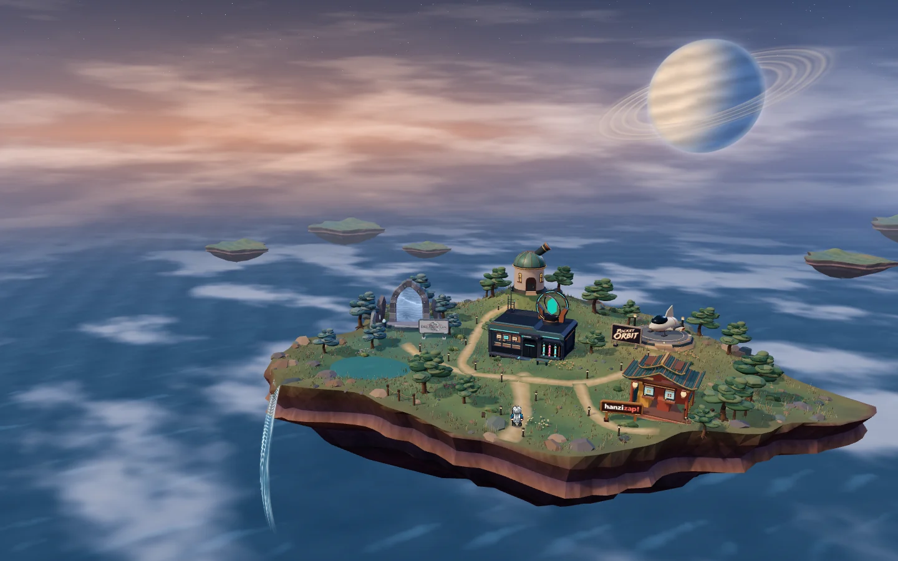
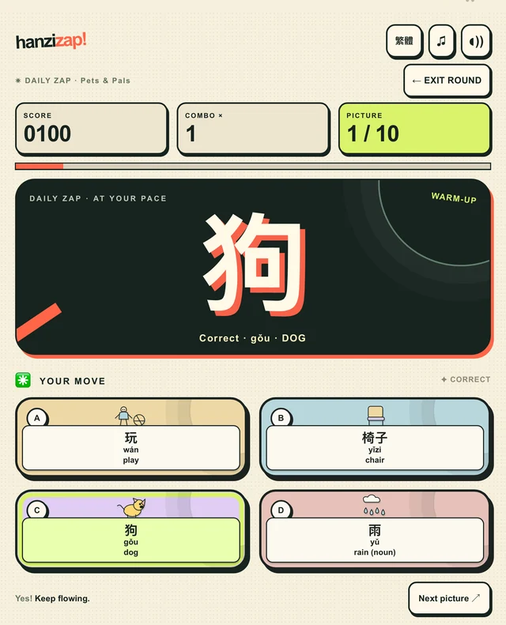

All projects
The Gateway
Follow Andi and his dog Sun through an ocean of worlds shaped by memory. Dream Ocean is a psychological fantasy RPG with tactical encounters and party battles.

The World Between Worlds
Building games, software & interactive worlds
Creator of Dream Ocean, Pocket Orbit & HanziZap
Browse projectsUse W A S D or the arrow keys to sprint. Hold Shift to walk. Drag to look. Press E near a destination or R to return to arrival.
The Gateway
Follow Andi and his dog Sun through an ocean of worlds shaped by memory. Dream Ocean is a psychological fantasy RPG with tactical encounters and party battles.
The Launchpad
Fly between planets with Mica, pick a place to put down roots, and grow a garden. Explore the Rell system solo or with a friend.
The Arcade

Match Mandarin characters to pictures in 45-second Sprint rounds, practice everyday conversations, and learn 300 beginner words at your own pace.
The Workshop
I’m an independent developer and musician. I make games, write music, and build the tools I use to bring those worlds to life.
Follow the path behind the workshop for a view of the ringed planet and the island below.
The project list is always available from the top of the screen.